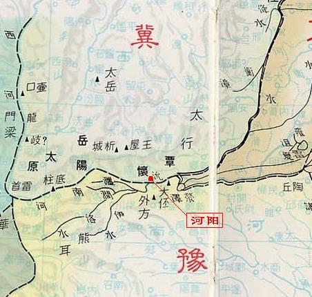
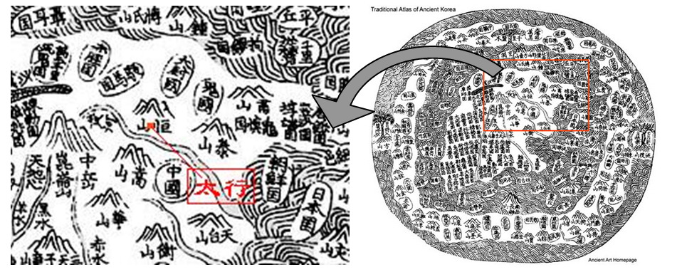
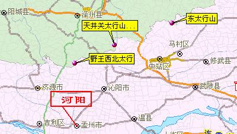
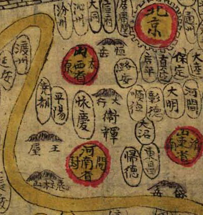
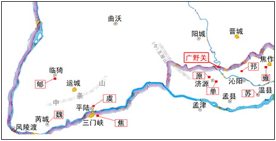

引子
在前面我们已经讲到过“愚公移山”中的人物、事物，并且预告说现在这一节“军事地理”将非常精彩。但现在，这个精彩看来要打个折扣，因为这一小节只讲军事地理，不讲谋略，因此便只是一些背景性的文字交待，喜欢读的便读，不喜欢追根究底的，跳过去也可。
军事策略总是要与地理、环境等因素相关的，因此如果不先交待这些，那么策略也就讲不清。但所涉的国、域、地名和位置信息等都是古代的，所以就写得罗嗦了。大家姑且放开心情，当作历史书看看罢。
下一节将是“军事谋略篇”，那才是重点。:)
1. 愚公到底是哪里人
在开始写“愚公移山记”之前，我最先做的事是查地理书，以搞清这个太行、王屋的位置。所以我在便写了一篇“愚公到底是哪里人”，以讨论这个问题。
需要强调的是，我们要想弄清的是神话寓言中的“太行、王屋二山”，在未被愚公移开之前是个什么样子。因为“愚公移山记”是要基于这种地理状况来展开故事的。
但大家都知道，《列子》中的愚公移山只是一个神话寓言，所谓“太行王屋，二山本一”原本就是当不得真的。那么，怎么解决这个问题呢？
《列子》中说太行王屋原本是在“冀州之南，河阳之北”。这冀州，包括现在河北省、山西省、河南省黄河以北、辽宁省辽河以西的地区。书中所说“冀州之南”，当是指山西的南边。而河阳也是地名，就是如今河南省孟州市(偏西)，河南之意，即是指黄河之北。
这里，文章用了两种确定地理位置的方法。“冀州”是“九州”之一，是地域名，而“河阳”则是一个确切的地名。“九州”指的是古代对中国疆域的九个大的行政划分：扬州、荆州、豫州、青州、兖州、雍州、幽州、冀州、并州。其中冀、豫（主要是指今河南地区）的地理位置如下图所示：

为了对照这个地理图，我在图上确切的位置标上了“河阳”。注意这张图上的“冀州”南边是以黄河为界的，而“河阳”这个地名便有“黄河之北”的意思（我国自古称山的南面为阳、北面为阴，河的情况与山相反：南面为阴，北面为阳）。因此从这张图来理解“冀州之南”，其实的意思是在冀州的南部地区，但还未越出冀州的边界。
接下来的问题是原文中说“方七百里”，这个七百里是多大呢？在我以前的考证中，说“太行山，北起北京西山，南达豫北黄河北崖，绵延800里”，这其实是不对的。因为这里说的是“太行山脉”，而古人并没有山脉、山系这样的地理概念。古人说一座山，便是一座（最多也只是包括它周边的一些地方）。那么古人说的这个大行山，就并不是今天说的太行山脉，而是某一个确指的山。
这还得从另一处考证说起。古代神话中所说的太行，是指《山海经》中的太行之山。《山海经》中的这座山，又得到一个名为“山海图”的图中去找。该图（也叫天下图）也是有的：

这个太行山的所在地，有三种说法。其中，汉书地理志则两太行，懋王县（野王县、河内县，今河南泌阳）西北有太行山，河内山阳县（今河南修武县之西北）西北有东太行山。而现今的地理学，除了说太行山脉之外，还以山西晋城县南的太行山（山顶为天井关），作为山脉的主峰。我们把这三个太行山在现在的地理图上标志出来：

这三处在地理位置上，大概只差了二、三十公里。我们大概可将晋城县南的“天井关太行山”作为愚公移山之后的所在，但以野王县西北的太行山就不妥当，因为它正好在河阳的正北。这座太行山在古地图中也是有标注的，例如明代的《中国十三省图》：

此图（局部）中间便是“大行（太行）”，左下位置便是“王屋”。而左侧、下侧黄色带状的便是黄河了。
至此，我们说清楚什么了吗？没有。我们的问题还是：“愚公是哪里人？”这得把现今的几座太行山搬过来，与王屋山一起填在河南孟县与山西晋城之间。然后我们再来看看，如果愚公住在“太行王屋之北”，那么他到底是在山西境内呢，还是在河南境内？
这里还有一个方位名词要论一下。《列子》说“愚公惩山北之塞”，那么是指愚公的北面是山呢，还是愚公住在山之北面。如果是前者，那么愚公则是在山之南侧居住。但如果这样，那么他还要“指通豫南”干什么呢？他的目标是要去到豫南的话，他就不会为山所阻了。所以愚公一定是住在山的北面的，这样才会“出入之迂”的。
有了这些前提，我们来恢复一下愚公移山之前的太行王屋的情状。只有有了这些条件，我们才能还原广野关前的军事、地理和局势。所以下面这张图是非常关键的：

这张图是以今天的山西省边境作为参照的。我们假定愚公时代的太行王屋二山，就在图中“广野关”所指向的地方，它“方八百里，高万仞”。昔日愚公住在这里，靠向山西（晋）的一侧，后来因为要挖开太行，晋王便在这里建了镇，名为“广野”。
在地图上，我们看到一条蓝色的水系从此穿过，这就是沁水。而在愚公挖开这里之前，沁水是会因为太行、王屋的存在而受到阻碍，不能流向南边的。所以在书中有一节会说，端木氏建议扩大工程以“使沁通南”，就是使这个沁水能贯通到南边。
2. 诸侯国与地名、域名
“愚公移山续”中写到十二个地、域名。这其中域名包括九州中的冀、豫、雍，地名包括太行、王屋、河曲、曲沃，河流名包括沁水（沁）和黄河（河）。还包括虚拟的地名广野镇（以及广野关），和一个难于考据的“朔”（这个在后面会讲到）。在地域名上，还有一个“（东都）王畿”，指的是古代王都所领辖的千里地界。
愚公移山的故事里一共提及到十六个国家：晋国，晋西南的邘、原、苏、雍、单，晋东南的虞、魏、郇、焦、虢（后世），晋北的燕，晋西的犬戎，以及东边临海的齐、鲁、越。核心的故事都是在晋国展开，书中交待过晋国（当时的）都城是“曲沃”。由于故事基本都是在冀、豫两地展开，所以十五个诸侯国中，有十一个是在这两处。我们先介绍这些国家（已在上图中标注）：
晋：周成王封其弟叔虞于唐（今山西翼城西），叔虞子改称晋，后曾迁都于曲沃（今山西闻喜）、绛（即翼，今山西翼城）、新田（今山西侯马）等地。春秋时期，晋国伐灭耿、霍、魏、虞、虢等国，战胜骊戎、赤狄等族。又打败楚国，大会诸侯时被周襄王正式赐命为霸主。
邘：周武王封次子邘叔在商代邘国旧址，建立邘国，其子孙以国为氏，姓邘。在今河南省沁阳县北部西万镇邘邰村。邘城北扼上党之门，南控虎牢之险。战略地位十分重要。春秋战国时，战乱四起，郑国灭邘国。
原：武王封文王第十六子为原伯，国域在今河南省济源市。现济源市西北2公里的庙街有原城故址。晋文公于前635年围攻原国。原人因文公守信而主动投降。原亡国后，晋文公将原伯贯迁往冀（山西省河津县）。
苏：夏朝中期，帝槐(或帝芬)封昆吾氏后裔于有苏(今河南辉县西的苏岭)，史称有苏氏，建苏国。商末苏国灭，族人以苏为姓，开始向四处迁徙。但留在苏岭的苏姓族人归顺了周朝，首领苏岔生入朝做了周武王的司寇，被封于苏地，国都温(今河南温县)。
雍：原为商代子姓小国，武王封文王第十三子于雍。雍国都城位于今河南焦作市西南7公里的朱村乡府城村。这里北望太行，南邻黄河，是夏商文化交汇处，商王畿西部的田猎区，也是东周时期晋国东进黄河下游，与齐楚争霸的战略要地。雍国于春秋中期被晋国吞并。
单：作檀，周成王之子所封的姬姓国。系东都王畿内封国，国域在今河南省济源市东南。单国之君世为王室卿士。杨树达注曰：“单音善，天子畿内地名。单伯，天子之卿，世仕三朝，此及文公之世皆称单伯，成公以下常称单子。”
虞：周武王封周太王古公亶父的二儿子虞仲的子孙在虞国（在今山西平陆县北）。春秋时，虞仲有个后人叫奚，因住在百里乡，又称百里奚，他在虞国任大夫。公元前655年，虞国被晋国所灭，百里奚和虞君都当了晋国的俘虏，成了奴隶。
魏：周成王分封的姬姓伯国，在今陕西大荔县和山西芮城县一带。古魏国原为商朝时的古芮国，西周分封时改为“魏”。《诗经·魏风》之“魏”，既是指此魏国。周惠王十七年（前661年），古魏国为晋国灭亡。
焦：周灭商后，“武王追思先圣王，乃褒封神农之后于焦”。焦国得名于焦水，即今苍龙涧河。焦国之城，当在今陕县七里村至湖滨区南关村一带的黄河阶地上。上阳（今三门峡市区）与焦城仅数里之遥。
郇：公元前11世纪时，周公旦公封文王第10子（一说第17子）于郇，史称郇侯、郇伯。地处山西猗氏县(今山西临猗)之境，其子孙以原国名“郇”为氏，后去“阝”旁，加草头为“荀”氏。春秋时为晋武公所灭， 晋国公族叔受封于荀邑，战国时属赵国，故荀子为赵人。
虢：周初始封姬姓国，有东、西、北虢之分，东虢、西虢已先亡于郑、秦。晋献公所伐为北虢，占地当今河南三门峡和山西平陆一带，建都上阳（今河南陕县李家窑村）。
其它的诸侯国只是被提及到，并末直接参与战争，包括：
齐：姜子牙就封在这里了。武王首封姜子牙为山东齐国侯。姜子牙建都丘（山东昌乐县），姜子牙的后人就以齐国的国名作为自己的姓氏。疆域最初在今山东偏北，后扩至整个山东半岛，与燕、卫、鲁、杞、莱接界。公元前221年，秦灭齐。
鲁：周成王封周公之子伯禽（代父就封），是为鲁公伯。诸侯国，姬姓。鲁国首都在曲阜，疆域在泰山以南，略有今山东省南部，兼涉河南、江苏、安徽三省小部分。在公元前249年被楚国灭亡。鲁国也是孔子的故乡。
燕：周武王封宗室召公于燕，在今北京及河北中、北部，史称北燕。燕国的都城在“蓟”，位于今北京房山区琉璃河。周的贵族和当地旧商的贵族以及当地土著建立了联合政权，使该地区原来的东胡民族逐渐融入华夏族。找荆轲杀秦王的，就是燕国太子丹。前222年燕灭于秦。
越：越国始立于公元前2079年，由夏六世帝少康所封（少康恐禹祭之绝祠，乃封其庶子於越，号曰无余），因此越国不是西周的封侯，而是以“圣王后裔”的名义，独自立“国”生存的部族。国都在会稽（今绍兴），公元前334年，楚国攻灭越国。
晋西的犬戎并不是诸侯国。它是一个古族名，是中国古代的一个民族，即猃狁，也称西戎，活动于今陕、甘一带，猃、岐之间。西周中期以后，西北地区的戎狄逐渐兴盛，不时入侵周朝。西周末期，褒姒祸乱周朝，激怒了申国申侯，便是联合了犬戎（和缯国），杀幽王于骊山下，灭了西周。东周后建都在至洛邑（今河南省洛阳市），东周又分春秋和战国两个时间。“愚公移山记” 所拟的故事，晚至春秋时期，以列子出现为止。
3. 朔东雍南的问题
列子的愚公移山中一直有个疑难未解，因为列子说夸娥氏把二山搬走，“一厝朔东，一厝雍南”。按古文的惯例，因为雍是域名，所以朔也应是地名或域名。由于九州中并没有“朔”，所以不能作域名，只能做地名解。这样一来，“朔”就只能是指汉代的朔方郡，在今内蒙伊盟西北部。然而大家应该知道，太行山并没有延伸到内蒙地区，因此显然是不对的。
“朔”除了解作“朔方郡”之外，他作为方位名词使用的时候，也表示“北方”。所以单独来看，“朔东”可以解释作“（在原本位置上的）北边偏东的位置”。表面上看来，这个位置倒也与现在的太行山脉一致，但它又与古人作文的文法不协调。
因此“朔东”到底指什么地方，就难以解释了。现在的译文通常译作“朔方以东”，这种译法并不准确，因为没有解释朔方在哪里。——事实上也解释不清楚。
如果仅仅是“朔东”有问题也就罢了，但接下来“雍南”也有问题。因为“雍”是九州之名，位在今天的陕西地区，与山西（九州之“冀州”）以黄河为界。所以“雍南”必然不在今天的山西境内，而会在今天的陕西境内、西安以南的地区。但大家也知道，今天的太行山、王屋山都在山西境内（或边境）。
因此，列子说“一厝朔东，一厝雍南”，其实不对。我们今天也知道，《列子》这本书是后人托列子之名写的，所以也不能怪他老人家（不过也有人说这是冤案，这还待考证）。大概还是写书的人搞错了地方，我这里也只是记录下这件事，大家有个参照罢了。
4. 广野的地理环境
原来的寓言中，“河曲智叟”是指住在河曲的智叟。这个河曲是地名，具体的位置呢，就在上图左下角的风陵渡一带。为了便于故事的发展，我把智叟改成了与愚公毗邻，只是在前言中交待，说他原是住在河曲，迁与愚公毗邻之后“仍以河曲人自称”。
原来的寓言中，并没有交待过愚公的背景。为了丰富人物，我把他说成了虞国人，就在上图的山西平陆县一带。愚公后来迁到太行之北居住，仍称自己是“虞人”；又因为他性情忠厚老实，便被人称作“愚公”了。这也算交待了愚公的背景。
在太行山被挖开之前，晋国之的西南有中条山，南边则被太行山阻断。所以晋国南边是相对安全的。晋国的北边则有大、小戎，西面有狄戎、犬戎。所以晋国的都城历来靠近西面，在西北和西南间辗转。晋国曾迁都三次，在愚公挖开太行山的时候（晋献侯时期），晋国都城从翼城南迁至曲沃，其用意便在于安定南方。所以我在“愚公移山记”中才说“王都曲沃者，在西定犬戎，南安虞魏”，并不是胡说，确实是当时军事情势上的需要。
在“愚公移山记”中，我说晋国都城建在西边，是因为西面是犬戎这些外姓氏族，而东边被太行所阻而没有危险。——这并不全对。历史上主要是因为象原、邘这些国家也是周朝的姬姓封国，是自家人——所以当愚公要把太行山从南边挖开，那么就失去了东南面的安全保障。这样一来，晋国建都在西面的条件就不充分了。
从军事上来说，一旦这种情势发生，通常就会成为战争的起始。在冷兵器时代，既然秦国的蜀道就可以成就统一的伟业，那么愚公挖开的这条道路，带来的后果是否同样堪虑呢？在“愚公移山记”中，京城礼准确地预见到这一点：战争不可避免地开始了。
而从这里开始，原来的“挖山工程”就已经彻底地变性，从利国利民的工程，变成了动摇国本的祸事。从这时此，所以的隐患都随着地理环境的变化而凸显出来。于晋国而言，优势变成了劣势，友国变成了敌国。
广野关外，虞、魏、原、邘、雍列阵以待，晋之危何以能解？
5. 其它
本小节的内幕，基本都是历史、地理知识。其实在“愚公移山记”的撰写过程，有两个问题一直困扰着我，一是太行、王屋在《列子》版本的故事中的位置，二是如何将一个移山工程演变成一场合理的战争。
第一个问题并没有合理的解决。太行王屋在山海经中的位置其实是说不清楚的，因为山海经原书的山海图已失，而作为山海经讲述山川的基点的昆仑今天也考据不到准确的位置。因此，我们再也找不到座标将太行山、王屋山画在山海图上。同样的理由，《列子》中的这个以山海经（或同源的传说）为背景的故事，也就失去了地理考据的价值。
第二个问题解决的比较合理，在以沁河为标志的广野关外，邗、原、苏等国如虎狼而恃；而在晋国都城不远，更有狄、焦、郇、虞、魏恃机而动。因此京城氏所预见的战争，的确是迟早之事。然而我们要记住的是，这个时期是在西周中期，这时周王朝对诸候国的影响力还非常之强，而且我们从上面的各诸候国封国的史实中可见，这些国家都是同宗同族，或者本出一源的。因此在这个历史时期，事实上并没有太多的内乱纷争，大多数的战争是出现在周王朝（领率各诸侯国）与狄夷等外族之间的。
因此事实上第二个问题只是“地理形势”上可以构成战争的条件，在天时、人和两方面还构不成战争的条件。所以，挖开太行所以引来了战争，并不合史时，也不合局势。这一点，要把“愚公移山记”当成军事题材来看的话，就不得不注意了。
但是，为了让故事发展下去，“愚公移山续”中还是让战争开始了。现在，另一个人物将站出来，改变“愚公移山”的故事走向与焦点，这就是端木长。我们会看到，故事从工程成为战争，又从战争成为数人论道的资本。而在这些论道者的所论中，那座山或者那个工程，只不过是百千年后的一份谈资罢了。